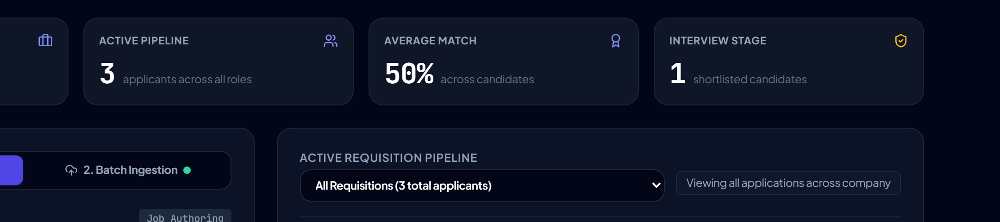
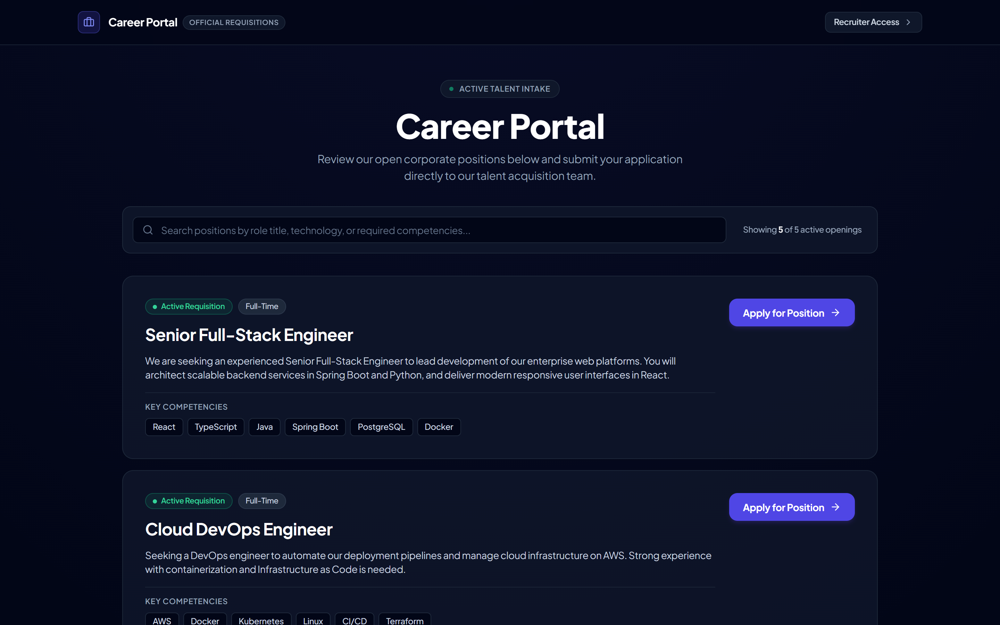
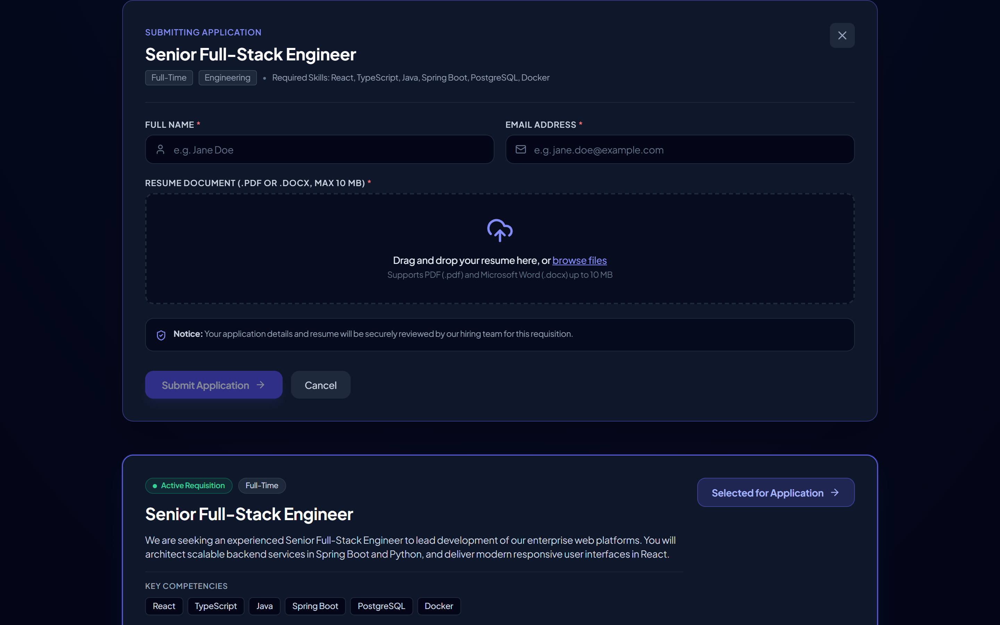
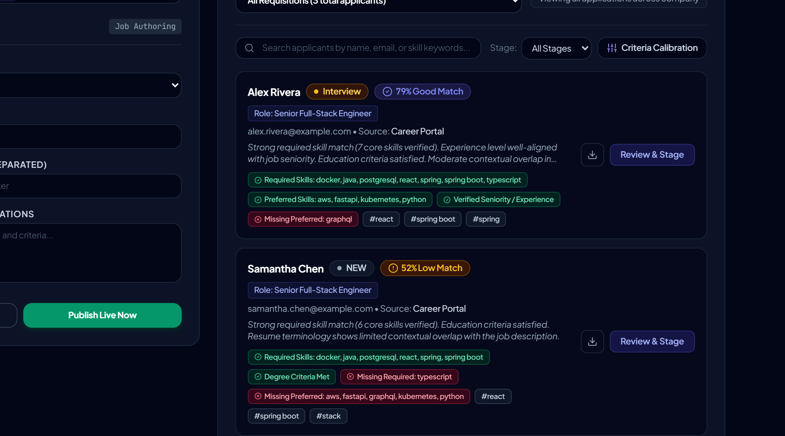
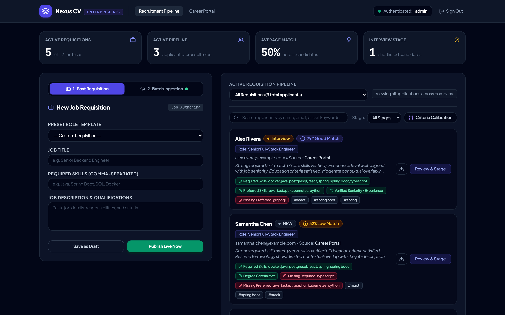
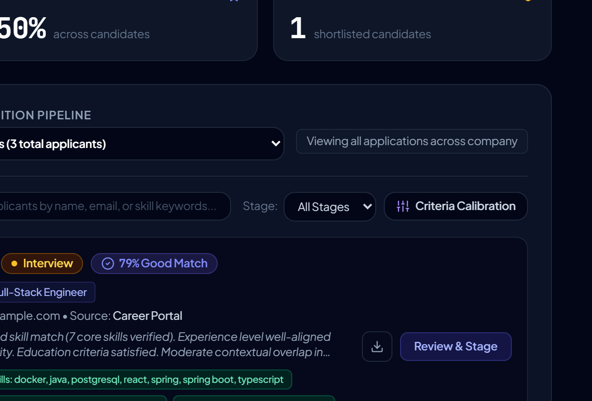
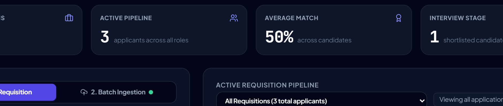
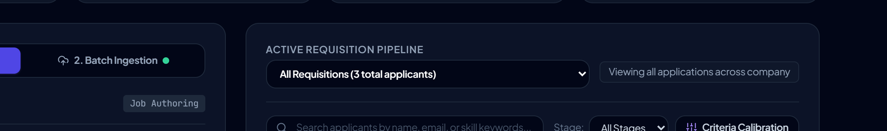

Recruiter Dashboard — Overview & Pipeline
Slide Focus & Context
Single-pane-of-glass dashboard unifying job requisitions, candidate volume, and pipeline velocity.
Presenter Speaking Notes
"This is the recruiter's operational cockpit. Talent teams monitor live application inflow, review candidate scores, and manage stages without clutter."
Job Creation Form — Structured Criteria Authoring

Slide Focus & Context
Explicit criteria definition separating required skills, preferred skills, experience, and education.
Presenter Speaking Notes
"Unlike legacy ATS tools that ingest unstructured job descriptions, NEXUS-CV requires structured role criteria to power multi-dimensional AI scoring."
Job Management — Publish, Pause, Close & Delete Actions

Slide Focus & Context
Granular lifecycle controls: publish to public portal, pause intake, and transactional deletion.
Presenter Speaking Notes
"Recruiters maintain complete control over openings. Pausing immediately unlists the role from public view, while deletion triggers a clean transactional wipe."
Public Career Portal — Candidate Job Board

Slide Focus & Context
Self-service responsive portal allowing applicants to browse active requisitions without login barriers.
Presenter Speaking Notes
"Candidates browse live openings with zero login friction. Clicking 'Apply Now' launches instant application intake in a dedicated new tab."
Job Application & Resume Upload Modal

Slide Focus & Context
Streamlined candidate submission modal with PDF/DOCX drag-and-drop validation.
Presenter Speaking Notes
"Candidates upload their resume in one click. The gateway performs instant file validation and streams it to the NLP engine for sub-second scoring."
Bulk Resume Screening — Recruiter Batch Ingestion
Slide Focus & Context
High-volume batch ingestion allowing recruiters to drop dozens of agency or campus resumes simultaneously.
Presenter Speaking Notes
"When talent teams receive 50+ resumes from referral drives, they drop the entire folder here for concurrent parsing and automated ranking."
Candidate Ranking & AI Match Scores

Slide Focus & Context
Automated prioritization of candidate pool ranked by continuous semantic vector fit scores.
Presenter Speaking Notes
"Applicants are prioritized by multi-dimensional match percentage. Recruiters identify exceptional candidates in seconds rather than days."
Explainable AI (XAI) Dimension Breakdown

Slide Focus & Context
Transparent evaluation replacing black-box numbers with 4 dimension bars and human-readable rationale.
Presenter Speaking Notes
"Our core novelty: every score is fully explained with strengths, verified experience, and specific missing gaps, eliminating hiring ambiguity."
Candidate Pipeline — 6-Stage State Machine

Slide Focus & Context
Structured 6-stage lifecycle requiring mandatory recruiter decision rationales.
Presenter Speaking Notes
"Moving an applicant between stages requires documented justification, creating an auditable record of every advancement or rejection."
Audit History & Activity Timeline
Slide Focus & Context
Immutable event log recording timestamps, stage transitions, and recruiter user attribution.
Presenter Speaking Notes
"Every status transition is permanently logged for EEOC and regulatory hiring audits, ensuring total institutional compliance."
Resume Preview & Secure Document Retrieval

Slide Focus & Context
On-demand retrieval of verified candidate resumes directly from private cloud storage.
Presenter Speaking Notes
"Recruiters can inspect or download the original resume at any time with a single click, perfectly preserved in its original formatting."
Candidate Search & Multi-Filter Toolbar

Slide Focus & Context
Dynamic search input, minimum match score slider, and stage filter tabs.
Presenter Speaking Notes
"Recruiters can instantly isolate 80%+ match cohorts, search candidate keywords, or view stage groups with zero latency."